library(randomForest)
library(terra)
library(tidyverse)Spatial Model Visualization: Scaling Methane Flux in Space
From flux density to emissions
In the Random Forest and Sensitivity Analysis workshops, we built and stress-tested a methane flux model. In this final workshop, we will project a model across Connecticut and turn gridded flux predictions into a methane emissions budget.
The key idea is a unit conversion:
methane flux density x inundated area = methane emissions
Our random forest predicts methane flux as g C m-2 month-1. That is a rate per square meter. A map of predicted flux is not yet an emissions budget. To estimate emissions, we need to multiply by the area where methane-producing wetlands are present.
That is where the Wetland Area and Dynamics for Methane Modeling (WAD2M) product enters. WAD2M provides monthly wetland/inundation fractions on a global 0.25 degree grid. Zhang et al. (2021) describe WAD2M version 1.0 as a monthly product for 2000-2018 built for large-scale methane modeling. The NASA UpCH4 methane emissions product uses WAD2M to weight gridded methane flux predictions by fractional wetland extent before converting them to by-grid-cell emissions.
Useful references:
- WAD2M paper: Zhang et al. 2021, Earth System Science Data
- WAD2M metadata summary: EPA HERO record
- Example methane upscaling product using WAD2M: NASA Open Data Portal, UpCH4
Data dependency
This workshop reuses the ERA5 climate rasters saved in data_integration.qmd: data/products/era5_ppt_monthly.tif and data/products/era5_tmean_monthly.tif.
For WAD2M, this workshop expects a Connecticut-ready 2018 monthly inundation fraction raster at data/products/wad2m_inundation_fraction_ct_2018.tif. If that file is not present, the code creates a clearly labeled seasonal classroom proxy from the provided MODIS land-cover raster so the unit-conversion workflow still runs.
By the end of this workshop, you will be able to:
- Identify the variables, units, names, and classes needed for spatial prediction.
- Align predictor rasters so they have the same CRS, resolution, extent, and layer names.
- Predict monthly methane flux density in space.
- Explain what WAD2M inundation fraction represents.
- Convert flux density to cell-level monthly and annual emissions.
- Compare budgets with and without inundation-fraction scaling.
- Extract predictions and emissions for the Yale-Myers Forest grid cell.
- Test how sensitive the budget is to inundation-area uncertainty.
- Report methane emissions in
g C,Tg C, andTg CH4.
Load libraries
1. List model variables and units
Load the model. This workshop uses the original spatial-projection model because it has three predictors that are available as rasters for Connecticut: precipitation, temperature, and an upland/inundated land-cover indicator.
load(file = "data/final_model.RDATA")
# The saved model object is called FCH4_F_gC.rf; alias it to match this course's naming convention.
fch4_rf <- FCH4_F_gC.rfInspect the model formula and variable classes:
formula(fch4_rf)FCH4_F_gC ~ P_F + TA_F + Upland
attr(,"variables")
list(FCH4_F_gC, P_F, TA_F, Upland)
attr(,"factors")
P_F TA_F Upland
FCH4_F_gC 0 0 0
P_F 1 0 0
TA_F 0 1 0
Upland 0 0 1
attr(,"term.labels")
[1] "P_F" "TA_F" "Upland"
attr(,"order")
[1] 1 1 1
attr(,"intercept")
[1] 0
attr(,"response")
[1] 1
attr(,"predvars")
list(FCH4_F_gC, P_F, TA_F, Upland)
attr(,"dataClasses")
FCH4_F_gC P_F TA_F Upland
"numeric" "numeric" "numeric" "factor" fch4_rf
Call:
randomForest(formula = FCH4_F_gC ~ P_F + TA_F + Upland, data = train, keep.forest = T, importance = TRUE, mtry = 1, ntree = 500, keep.inbag = TRUE)
Type of random forest: regression
Number of trees: 500
No. of variables tried at each split: 1
Mean of squared residuals: 4.40718
% Var explained: 32.54class(train$P_F)[1] "numeric"class(train$TA_F)[1] "numeric"class(train$Upland)[1] "factor"To project this model in space, the raster stack must contain:
| Model variable | Meaning | Unit or class | Spatial source |
|---|---|---|---|
P_F |
Monthly total precipitation | mm month-1 | ERA5 |
TA_F |
Monthly mean air temperature | degrees C | ERA5 |
Upland |
Ecosystem indicator | factor with levels inundated, upland |
MODIS land cover |
The model prediction has units of g C m-2 month-1.
Which random forest should you project?
This workshop uses the simple spatial model because its predictors are easy to map for every grid cell in Connecticut. The updated Random Forest workshop may save a stronger model at data/products/random_forest_model.RDATA, but that model can only be projected if every selected predictor has a spatial raster with the same name and class expected by the model.
For example, a model using NDVI, EVI, VPD_F, or IGBP_model requires matching spatial layers for those variables. A good final project model is not only the model with the best test metrics; it is also a model whose predictors can be mapped honestly.
Check whether the updated random forest exists and inspect its predictors:
if (file.exists("data/products/random_forest_model.RDATA")) {
load("data/products/random_forest_model.RDATA")
updated_model_predictors <- final_predictors
} else {
updated_model_predictors <- NA_character_
}
updated_model_predictors[1] NAReload the simple spatial model for the rest of this workshop:
load(file = "data/final_model.RDATA")
fch4_rf <- FCH4_F_gC.rf2. Build the Connecticut prediction grid
Use the provided Connecticut MODIS raster as the Connecticut template. This gives us an area of interest and a target grid without requiring students to download a state boundary file.
igbp_ct <- terra::rast("data/MODIS_IGBP_2001-2022_CT.tif")
ct_template <- igbp_ct[[2018 - 2001 + 1]]
ct_extent <- ext(ct_template)
terra::plot(ct_template, main = "Connecticut MODIS land-cover template")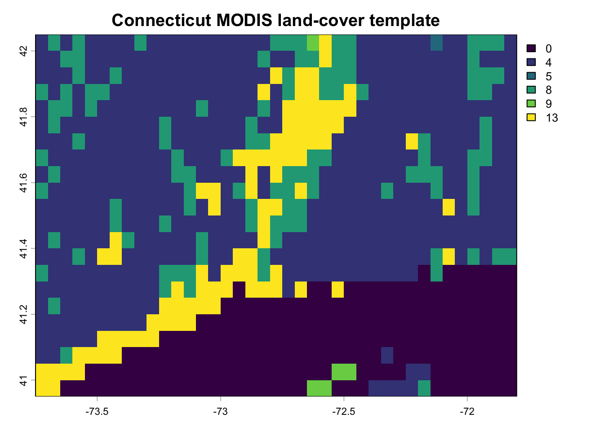
Load the ERA5 rasters saved in Data Integration, keep only the 2018 layers, then crop and mask them to Connecticut:
era5_ppt_all <- terra::rast("data/products/era5_ppt_monthly.tif")
era5_tmean_all <- terra::rast("data/products/era5_tmean_monthly.tif")
ct_era5_ppt <- era5_ppt_all[[grepl("2018", names(era5_ppt_all))]] %>%
crop(ct_extent)
ct_era5_tmean <- era5_tmean_all[[grepl("2018", names(era5_tmean_all))]] %>%
crop(ct_extent)
ct_era5_tmeanclass : SpatRaster
size : 5, 8, 12 (nrow, ncol, nlyr)
resolution : 0.25, 0.25 (x, y)
extent : -73.875, -71.875, 40.875, 42.125 (xmin, xmax, ymin, ymax)
coord. ref. : lon/lat WGS 84 (EPSG:4326)
source(s) : memory
varname : era5_tmean_monthly
names : Jan 2018, Feb 2018, Mar 2018, Apr 2018, May 2018, Jun 2018, ...
min values : -4.4047914, 0.6181275, 0.7277466, 5.277246, 12.04525, 16.57418, ...
max values : 0.8588806, 4.0556273, 3.8839965, 8.054590, 17.87338, 21.26168, ...
time : 2018-01-01 to 2018-12-01 UTC (12 steps) Save the cropped climate layers if you want to reuse them:
writeRaster(ct_era5_tmean, "data/products/era5_tmean_ct_2018.tif", overwrite = TRUE)
writeRaster(ct_era5_ppt, "data/products/era5_ppt_ct_2018.tif", overwrite = TRUE)3. Build the land-cover predictor
Inspect the MODIS IGBP layer for Connecticut:
igbp_ctclass : SpatRaster
size : 22, 39, 22 (nrow, ncol, nlyr)
resolution : 0.05, 0.05 (x, y)
extent : -73.75, -71.8, 40.95, 42.05 (xmin, xmax, ymin, ymax)
coord. ref. : lon/lat Unknown datum based upon the Clarke 1866 ellipsoid
source : MODIS_IGBP_2001-2022_CT.tif
names : Major~ype_1, Major~ype_1, Major~ype_1, Major~ype_1, Major~ype_1, Major~ype_1, ...
min values : 0, 0, 0, 0, 0, 0, ...
max values : 14, 13, 14, 14, 14, 13, ...
time (raw) : 992563200 to 1655251200 (22 steps) terra::plot(igbp_ct[[1]])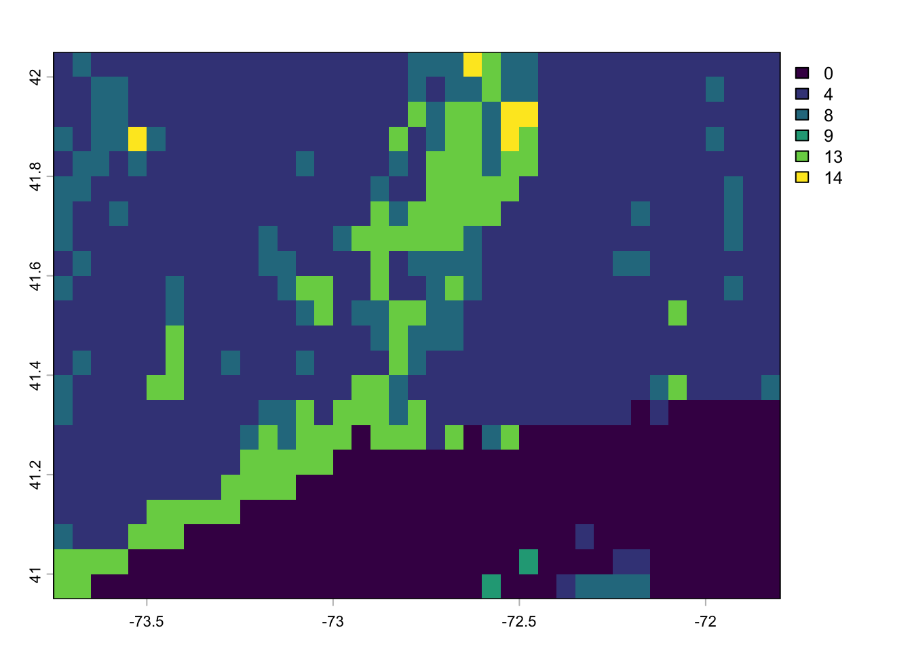
The MODIS IGBP classes include forest, shrubland, savanna, grassland, wetlands, cropland, urban land, snow/ice, barren land, and water. For this model, we simplify those classes into Upland.
igbp_ct_r <- igbp_ct
igbp_ct_r[igbp_ct_r == 0] <- NA
igbp_ct_r[igbp_ct_r == 1] <- 1
igbp_ct_r[igbp_ct_r == 2] <- 1
igbp_ct_r[igbp_ct_r == 3] <- 1
igbp_ct_r[igbp_ct_r == 4] <- 1
igbp_ct_r[igbp_ct_r == 5] <- 1
igbp_ct_r[igbp_ct_r == 6] <- 1
igbp_ct_r[igbp_ct_r == 7] <- 1
igbp_ct_r[igbp_ct_r == 8] <- 1
igbp_ct_r[igbp_ct_r == 9] <- 1
igbp_ct_r[igbp_ct_r == 10] <- 1
igbp_ct_r[igbp_ct_r == 11] <- 0
igbp_ct_r[igbp_ct_r == 12] <- NA
igbp_ct_r[igbp_ct_r == 13] <- NA
igbp_ct_r[igbp_ct_r == 14] <- NA
igbp_ct_r[igbp_ct_r == 15] <- 0
igbp_ct_r[igbp_ct_r == 16] <- 1
igbp_ct_r[igbp_ct_r == 17] <- 0Format the Upland raster as a factor:
factors_df <- data.frame(id = c(0, 1), cover = c("inundated", "upland"))
for (i in seq_len(nlyr(igbp_ct_r))) {
levels(igbp_ct_r[[i]]) <- factors_df
}Subset the 2018 layer:
igbp_ct_upland <- igbp_ct_r[[2018 - 2001 + 1]]
names(igbp_ct_upland) <- "Upland"
terra::plot(igbp_ct_upland)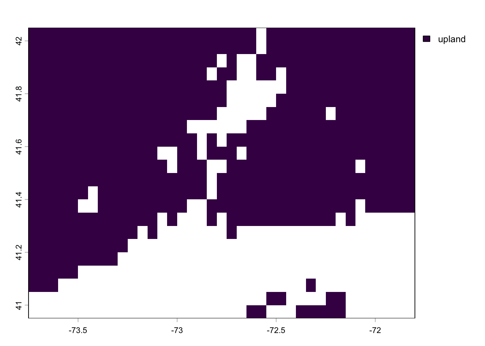
Use the land-cover grid as the target grid, then resample the climate layers to match it:
igbp_ct_upland <- terra::project(igbp_ct_upland, ct_era5_ppt)
ct_era5_tmean_resample <- resample(ct_era5_tmean, igbp_ct_upland)
ct_era5_ppt_resample <- resample(ct_era5_ppt, igbp_ct_upland)Check that the layers now align:
compareGeom(igbp_ct_upland, ct_era5_tmean_resample, ct_era5_ppt_resample)[1] TRUE4. Introduce WAD2M inundation fraction
WAD2M is not a model predictor in this simple random forest. It is used after prediction to scale fluxes by wetland or inundated area.
The values should be fractions between 0 and 1:
0means no WAD2M wetland/inundated area in the grid cell.0.25means 25% of the grid cell is wetland/inundated area.1means the whole grid cell is wetland/inundated area.
Prepare WAD2M for Connecticut
The exact WAD2M download workflow depends on the format you obtain from the data portal. The key preparation steps are always the same:
- Load the global WAD2M inundation-fraction product.
- Select the 12 monthly layers for 2018.
- Crop the product to Connecticut.
- Project and resample it to the same grid as the model predictions.
- Save the prepared raster as
data/products/wad2m_inundation_fraction_ct_2018.tif.
The following code is a template for preparing a local WAD2M NetCDF or GeoTIFF file after download:
wad2m_global <- rast("path/to/WAD2M_monthly_inundation_fraction.nc")
# Replace this pattern with the actual layer names in your WAD2M file.
wad2m_2018 <- wad2m_global[[grepl("2018", names(wad2m_global))]]
wad2m_ct_2018 <- wad2m_2018 %>%
crop(ct_extent) %>%
project(igbp_ct_upland) %>%
resample(igbp_ct_upland, method = "bilinear") %>%
clamp(lower = 0, upper = 1, values = TRUE)
names(wad2m_ct_2018) <- sprintf("wad2m_fraction_m%02d", 1:12)
writeRaster(wad2m_ct_2018,
"data/products/wad2m_inundation_fraction_ct_2018.tif",
overwrite = TRUE)If your target year is not available
WAD2M may not cover the year you want to model. For example, WAD2M version 1.0 covers 2000-2018, but your final project might need a later year. In that case, do not leave inundation fraction out of the budget. Instead, calculate a mean monthly inundation climatology from the WAD2M years that are available.
The idea is:
- average all available January layers to create a typical January inundation fraction;
- average all available February layers to create a typical February inundation fraction;
- repeat for all 12 months;
- use those 12 monthly averages to scale the target year’s flux predictions.
This preserves seasonal wetland-area dynamics, even though it cannot represent the exact wetland extent of the missing year.
target_year <- 2021
wad2m_global <- rast("path/to/WAD2M_monthly_inundation_fraction.nc")
wad2m_dates <- tibble(
layer = seq_len(nlyr(wad2m_global)),
layer_name = names(wad2m_global)
) %>%
mutate(
year = as.integer(str_extract(layer_name, "\\d{4}")),
month = as.integer(str_extract(layer_name, "(?<=-)\\d{2}|(?<=_)\\d{2}$"))
)
target_layers <- wad2m_dates %>%
filter(year == target_year)
if (nrow(target_layers) == 12) {
wad2m_target <- wad2m_global[[target_layers$layer]]
} else {
wad2m_monthly_climatology <- map(1:12, function(month_id) {
month_layers <- wad2m_dates %>%
filter(month == month_id) %>%
pull(layer)
mean(wad2m_global[[month_layers]], na.rm = TRUE)
})
wad2m_target <- rast(wad2m_monthly_climatology)
}
wad2m_target_ct <- wad2m_target %>%
crop(ct_extent) %>%
project(igbp_ct_upland) %>%
resample(igbp_ct_upland, method = "bilinear") %>%
clamp(lower = 0, upper = 1, values = TRUE)
names(wad2m_target_ct) <- sprintf("wad2m_fraction_m%02d", 1:12)
writeRaster(wad2m_target_ct,
sprintf("data/products/wad2m_inundation_fraction_ct_%s.tif", target_year),
overwrite = TRUE)
Report this clearly
If you use a monthly climatology because the target year is unavailable, say so in your methods. Write something like: “Because WAD2M was unavailable for the target year, monthly inundation fractions were estimated using the mean WAD2M fraction for each calendar month across available years.”
Load the Connecticut 2018 WAD2M layer if it exists. The file should have 12 layers, one for each month of 2018. If it has one layer, the workflow will reuse that layer for all months. The fallback proxy below is only for teaching the unit conversion; replace it with real WAD2M before using the results scientifically.
wad2m_path <- "data/products/wad2m_inundation_fraction_ct_2018.tif"
if (file.exists(wad2m_path)) {
wad2m_fraction <- rast(wad2m_path)
wad2m_source <- "WAD2M inundation fraction"
} else {
natural_mask <- igbp_ct[[2018 - 2001 + 1]]
natural_mask[natural_mask %in% c(0, 12, 13, 14)] <- NA
natural_mask[!is.na(natural_mask)] <- 1
seasonal_fraction <- c(0.04, 0.05, 0.07, 0.10, 0.12, 0.11,
0.09, 0.08, 0.07, 0.06, 0.05, 0.04)
wad2m_fraction <- rast(lapply(seasonal_fraction, function(x) natural_mask * x))
wad2m_source <- "seasonal classroom proxy, not WAD2M"
}
wad2m_source[1] "seasonal classroom proxy, not WAD2M"Align the inundation fraction layer to the prediction grid:
wad2m_fraction <- terra::project(wad2m_fraction, igbp_ct_upland)
wad2m_fraction <- terra::resample(wad2m_fraction, igbp_ct_upland, method = "bilinear")
wad2m_fraction <- terra::clamp(wad2m_fraction, lower = 0, upper = 1, values = TRUE)
if (nlyr(wad2m_fraction) == 1) {
wad2m_fraction <- rep(wad2m_fraction, 12)
}
wad2m_fraction <- wad2m_fraction[[1:12]]
names(wad2m_fraction) <- sprintf("wad2m_fraction_m%02d", 1:12)
terra::plot(wad2m_fraction[[1]], main = "January inundation fraction")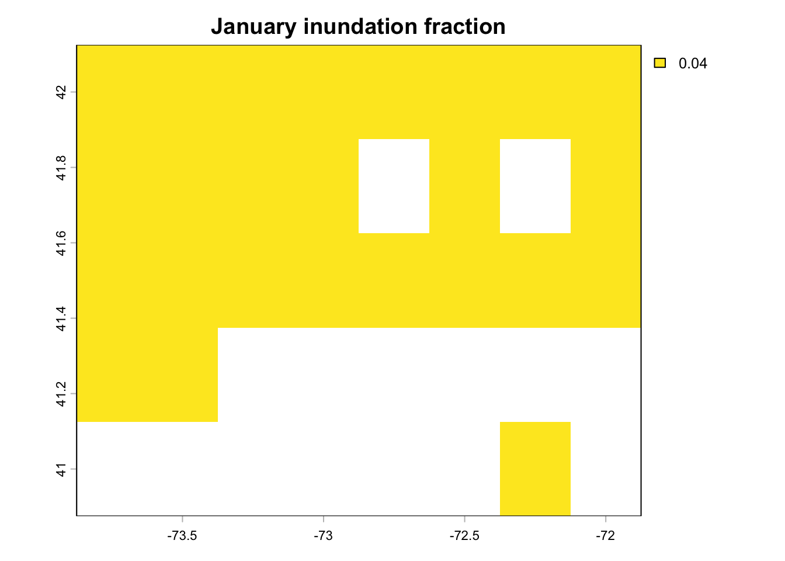
Check the fraction values:
global(wad2m_fraction, range, na.rm = TRUE) X1 X2
wad2m_fraction_m01 0.04 0.04
wad2m_fraction_m02 0.05 0.05
wad2m_fraction_m03 0.07 0.07
wad2m_fraction_m04 0.10 0.10
wad2m_fraction_m05 0.12 0.12
wad2m_fraction_m06 0.11 0.11
wad2m_fraction_m07 0.09 0.09
wad2m_fraction_m08 0.08 0.08
wad2m_fraction_m09 0.07 0.07
wad2m_fraction_m10 0.06 0.06
wad2m_fraction_m11 0.05 0.05
wad2m_fraction_m12 0.04 0.04global(wad2m_fraction, mean, na.rm = TRUE) mean
wad2m_fraction_m01 0.04
wad2m_fraction_m02 0.05
wad2m_fraction_m03 0.07
wad2m_fraction_m04 0.10
wad2m_fraction_m05 0.12
wad2m_fraction_m06 0.11
wad2m_fraction_m07 0.09
wad2m_fraction_m08 0.08
wad2m_fraction_m09 0.07
wad2m_fraction_m10 0.06
wad2m_fraction_m11 0.05
wad2m_fraction_m12 0.045. Make monthly flux predictions
Build a raster stack for January:
model_rasters_m1 <- c(igbp_ct_upland,
ct_era5_tmean_resample[[1]],
ct_era5_ppt_resample[[1]])
names(model_rasters_m1) <- c("Upland", "TA_F", "P_F")
model_rasters_m1class : SpatRaster
size : 5, 8, 3 (nrow, ncol, nlyr)
resolution : 0.25, 0.25 (x, y)
extent : -73.875, -71.875, 40.875, 42.125 (xmin, xmax, ymin, ymax)
coord. ref. : lon/lat WGS 84 (EPSG:4326)
source(s) : memory
names : Upland, TA_F, P_F
min values : upland, -4.4047914, 77.78263
max values : upland, 0.8588806, 142.67540 Check that the raster classes match the training data:
class(train$Upland)[1] "factor"levels(train$Upland)[1] "inundated" "upland" model_rasters_m1$Uplandclass : SpatRaster
size : 5, 8, 1 (nrow, ncol, nlyr)
resolution : 0.25, 0.25 (x, y)
extent : -73.875, -71.875, 40.875, 42.125 (xmin, xmax, ymin, ymax)
coord. ref. : lon/lat WGS 84 (EPSG:4326)
source(s) : memory
categories : cover
name : Upland
min value : upland
max value : upland Predict January methane flux density:
model_rasters_m1_pred <- terra::predict(object = model_rasters_m1, model = fch4_rf)
names(model_rasters_m1_pred) <- "F_CH4"
units(model_rasters_m1_pred) <- "g C m-2 month-1"
plot(model_rasters_m1_pred)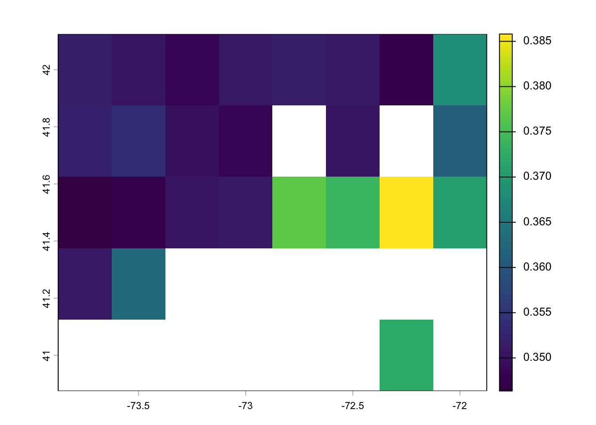
Predict all 12 months:
monthly_predictions <- list()
for (i in seq_len(12)) {
model_rasters <- c(igbp_ct_upland,
ct_era5_tmean_resample[[i]],
ct_era5_ppt_resample[[i]])
names(model_rasters) <- c("Upland", "TA_F", "P_F")
pred <- terra::predict(object = model_rasters, model = fch4_rf)
names(pred) <- sprintf("F_CH4_m%02d", i)
units(pred) <- "g C m-2 month-1"
monthly_predictions[[i]] <- pred
}
predictions <- rast(monthly_predictions)
predictionsclass : SpatRaster
size : 5, 8, 12 (nrow, ncol, nlyr)
resolution : 0.25, 0.25 (x, y)
extent : -73.875, -71.875, 40.875, 42.125 (xmin, xmax, ymin, ymax)
coord. ref. : lon/lat WGS 84 (EPSG:4326)
source(s) : memory
names : F_CH4_m01, F_CH4_m02, F_CH4_m03, F_CH4_m04, F_CH4_m05, F_CH4_m06, ...
min values : 0.3463437, 0.3571807, 0.3576182, 0.5576062, 0.6120633, 0.6136239, ...
max values : 0.3858116, 0.9608294, 0.7377671, 0.7411477, 0.8840865, 0.9260942, ...
unit : g C m-2 month-1 Save the monthly prediction rasters if you want to use them later:
predictions_dir <- file.path("data", "products", "predictions")
dir.create(predictions_dir, showWarnings = FALSE, recursive = TRUE)
for (i in seq_len(nlyr(predictions))) {
writeRaster(predictions[[i]],
file.path(predictions_dir, sprintf("model_pred_m%02d.tif", i)),
overwrite = TRUE)
}6. Convert flux density to emissions
The model predictions are flux densities:
g C m-2 month-1
To convert each grid cell to monthly emissions, multiply by inundated area:
g C m-2 month-1 x m2 = g C month-1
Keep the units visible as you work:
unit_conversion_table <- tibble(
quantity = c("predicted flux density",
"cell area",
"inundation fraction",
"inundated area",
"monthly emissions",
"annual emissions",
"annual emissions"),
calculation = c("random forest prediction",
"terra::cellSize()",
"WAD2M value",
"cell area x inundation fraction",
"flux density x inundated area",
"sum monthly g C / 1e12",
"Tg C x 16 / 12"),
unit = c("g C m-2 month-1",
"m2 cell-1",
"unitless",
"m2 cell-1",
"g C cell-1 month-1",
"Tg C year-1",
"Tg CH4 year-1")
)
unit_conversion_table# A tibble: 7 × 3
quantity calculation unit
<chr> <chr> <chr>
1 predicted flux density random forest prediction g C m-2 month-1
2 cell area terra::cellSize() m2 cell-1
3 inundation fraction WAD2M value unitless
4 inundated area cell area x inundation fraction m2 cell-1
5 monthly emissions flux density x inundated area g C cell-1 month-1
6 annual emissions sum monthly g C / 1e12 Tg C year-1
7 annual emissions Tg C x 16 / 12 Tg CH4 year-1 First calculate total cell area in square meters:
cell_area_m2 <- cellSize(predictions[[1]], unit = "m")
names(cell_area_m2) <- "cell_area_m2"
plot(cell_area_m2)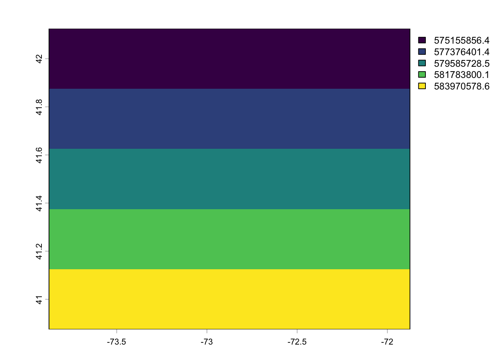
Now calculate monthly inundated area:
inundated_area_m2 <- wad2m_fraction * cell_area_m2
names(inundated_area_m2) <- sprintf("inundated_area_m2_m%02d", 1:12)
global(inundated_area_m2, sum, na.rm = TRUE) sum
inundated_area_m2_m01 577989158
inundated_area_m2_m02 722486474
inundated_area_m2_m03 1011481053
inundated_area_m2_m04 1444972948
inundated_area_m2_m05 1733967473
inundated_area_m2_m06 1589470211
inundated_area_m2_m07 1300475686
inundated_area_m2_m08 1155978316
inundated_area_m2_m09 1011481053
inundated_area_m2_m10 866983737
inundated_area_m2_m11 722486474
inundated_area_m2_m12 577989158Convert monthly flux density to monthly emissions:
monthly_emissions_g_c <- predictions * inundated_area_m2
names(monthly_emissions_g_c) <- sprintf("emissions_g_c_m%02d", 1:12)
units(monthly_emissions_g_c) <- "g C month-1"
monthly_emissions_g_cclass : SpatRaster
size : 5, 8, 12 (nrow, ncol, nlyr)
resolution : 0.25, 0.25 (x, y)
extent : -73.875, -71.875, 40.875, 42.125 (xmin, xmax, ymin, ymax)
coord. ref. : lon/lat WGS 84 (EPSG:4326)
source(s) : memory
names : emiss~c_m01, emiss~c_m02, emiss~c_m03, emiss~c_m04, emiss~c_m05, emiss~c_m06, ...
min values : 7988884, 10271728, 14398034, 32071045, 42243817, 38822230, ...
max values : 8944436, 27844151, 29703174, 43035835, 61018501, 58817543, ...
unit : g C month-1 Compute annual emissions per grid cell:
annual_emissions_g_c <- sum(monthly_emissions_g_c)
names(annual_emissions_g_c) <- "annual_emissions_g_c"
units(annual_emissions_g_c) <- "g C year-1"
plot(annual_emissions_g_c)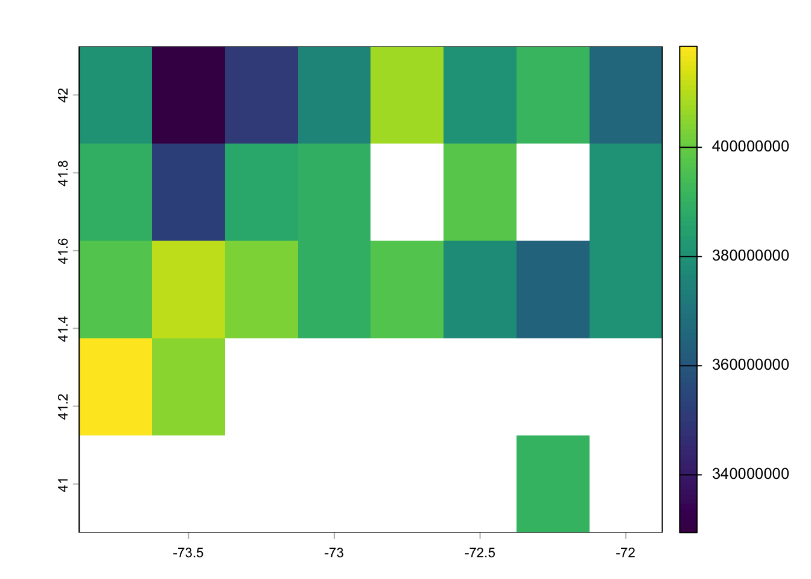
Convert g C to larger reporting units:
annual_emissions_tg_c <- annual_emissions_g_c / 1e12
names(annual_emissions_tg_c) <- "annual_emissions_tg_c"
units(annual_emissions_tg_c) <- "Tg C year-1"
annual_emissions_tg_ch4 <- annual_emissions_tg_c * (16 / 12)
names(annual_emissions_tg_ch4) <- "annual_emissions_tg_ch4"
units(annual_emissions_tg_ch4) <- "Tg CH4 year-1"The molecular-weight conversion is:
Tg CH4 = Tg C x 16 / 12
because methane is CH4, with molecular mass 16, and carbon has atomic mass 12.
7. Build the Connecticut methane budget
Sum across grid cells:
ct_budget <- tibble(
quantity = c("annual emissions", "annual emissions"),
unit = c("Tg C year-1", "Tg CH4 year-1"),
value = c(
global(annual_emissions_tg_c, "sum", na.rm = TRUE)[1, 1],
global(annual_emissions_tg_ch4, "sum", na.rm = TRUE)[1, 1]
)
)
ct_budget# A tibble: 2 × 3
quantity unit value
<chr> <chr> <dbl>
1 annual emissions Tg C year-1 0.00961
2 annual emissions Tg CH4 year-1 0.0128 Create a monthly budget:
monthly_budget <- tibble(
month = 1:12,
emissions_g_c = as.numeric(global(monthly_emissions_g_c, "sum", na.rm = TRUE)[1, ]),
emissions_tg_c = emissions_g_c / 1e12,
emissions_tg_ch4 = emissions_tg_c * (16 / 12),
inundated_area_km2 = as.numeric(global(inundated_area_m2, "sum", na.rm = TRUE)[1, ]) / 1e6
)
monthly_budget# A tibble: 12 × 5
month emissions_g_c emissions_tg_c emissions_tg_ch4 inundated_area_km2
<int> <dbl> <dbl> <dbl> <dbl>
1 1 206335226. 0.000206 0.000275 578.
2 2 206335226. 0.000206 0.000275 578.
3 3 206335226. 0.000206 0.000275 578.
4 4 206335226. 0.000206 0.000275 578.
5 5 206335226. 0.000206 0.000275 578.
6 6 206335226. 0.000206 0.000275 578.
7 7 206335226. 0.000206 0.000275 578.
8 8 206335226. 0.000206 0.000275 578.
9 9 206335226. 0.000206 0.000275 578.
10 10 206335226. 0.000206 0.000275 578.
11 11 206335226. 0.000206 0.000275 578.
12 12 206335226. 0.000206 0.000275 578.Plot the seasonal budget:
monthly_budget %>%
ggplot(aes(x = month, y = emissions_tg_ch4)) +
geom_line() +
geom_point() +
labs(title = "Monthly Connecticut wetland methane emissions",
x = "Month",
y = "Tg CH4 month-1")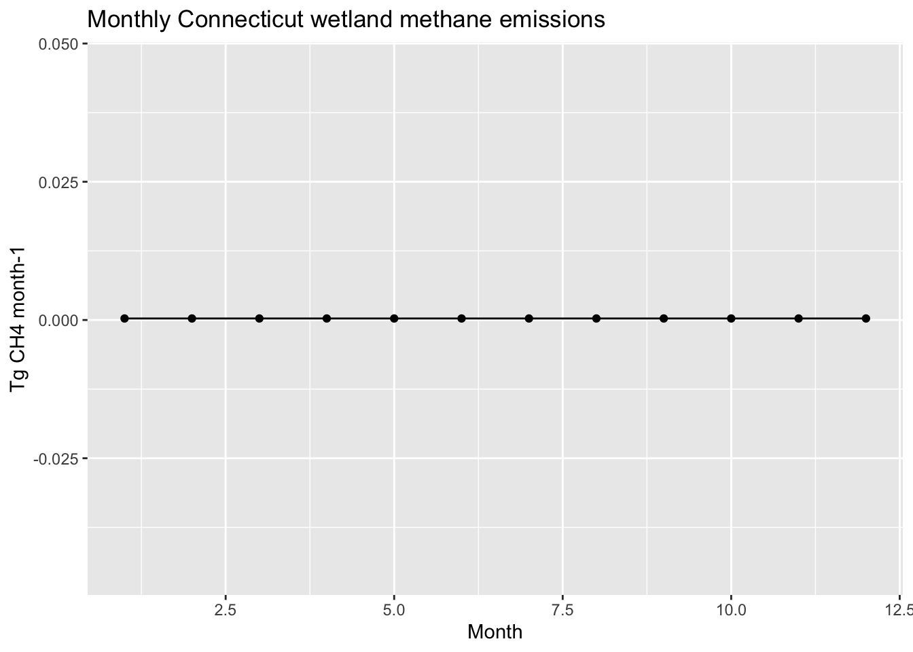
8. Extract Yale-Myers Forest
Now connect the spatial budget back to Yale-Myers Forest. These values represent the coarse model grid cell containing Yale-Myers, not a field-scale measurement of the forest.
yale_myers <- vect(
data.frame(
site = "Yale-Myers Forest",
lon = -72.123859,
lat = 41.952909
),
geom = c("lon", "lat"),
crs = "EPSG:4326"
)
yale_myers <- project(yale_myers, predictions)
plot(predictions[[7]], main = "July predicted methane flux")
points(yale_myers, pch = 16, col = "red")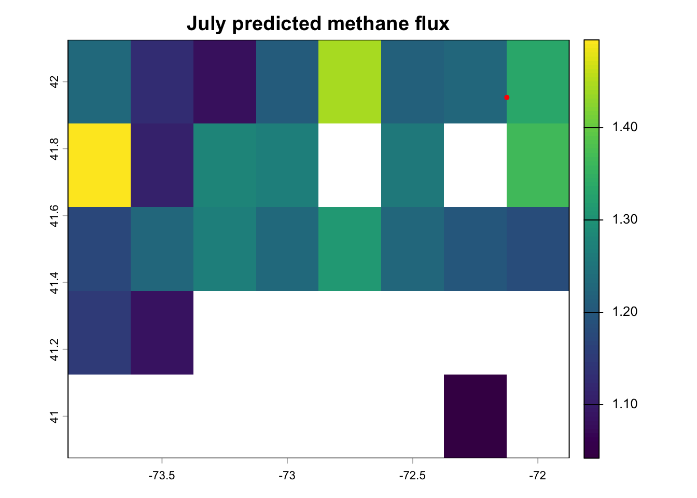
Extract monthly flux density, inundation fraction, inundated area, and emissions for the grid cell containing Yale-Myers:
yale_flux <- terra::extract(predictions, yale_myers) %>%
select(-ID) %>%
pivot_longer(everything(),
names_to = "flux_layer",
values_to = "flux_g_c_m2_month")
yale_fraction <- terra::extract(wad2m_fraction, yale_myers) %>%
select(-ID) %>%
pivot_longer(everything(),
names_to = "fraction_layer",
values_to = "inundation_fraction")
yale_area <- terra::extract(inundated_area_m2, yale_myers) %>%
select(-ID) %>%
pivot_longer(everything(),
names_to = "area_layer",
values_to = "inundated_area_m2")
yale_emissions <- terra::extract(monthly_emissions_g_c, yale_myers) %>%
select(-ID) %>%
pivot_longer(everything(),
names_to = "emissions_layer",
values_to = "emissions_g_c_month")
yale_myers_monthly <- tibble(month = 1:12) %>%
bind_cols(yale_flux, yale_fraction, yale_area, yale_emissions) %>%
mutate(
emissions_tg_c_month = emissions_g_c_month / 1e12,
emissions_tg_ch4_month = emissions_tg_c_month * (16 / 12)
) %>%
select(month,
flux_g_c_m2_month,
inundation_fraction,
inundated_area_m2,
emissions_g_c_month,
emissions_tg_ch4_month)
yale_myers_monthly# A tibble: 12 × 6
month flux_g_c_m2_month inundation_fraction inundated_area_m2
<int> <dbl> <dbl> <dbl>
1 1 0.368 0.0400 23006234.
2 2 0.365 0.0500 28757793.
3 3 0.364 0.0700 40260910.
4 4 0.725 0.100 57515587.
5 5 0.629 0.120 69018701.
6 6 0.711 0.110 63267144.
7 7 1.34 0.0900 51764029.
8 8 1.17 0.0800 46012467.
9 9 0.801 0.0700 40260910.
10 10 0.627 0.0600 34509351.
11 11 0.589 0.0500 28757793.
12 12 0.353 0.0400 23006234.
# ℹ 2 more variables: emissions_g_c_month <dbl>, emissions_tg_ch4_month <dbl>Summarize the Yale-Myers grid cell:
yale_myers_summary <- yale_myers_monthly %>%
summarize(
mean_flux_g_c_m2_month = mean(flux_g_c_m2_month, na.rm = TRUE),
mean_inundation_fraction = mean(inundation_fraction, na.rm = TRUE),
max_inundated_area_m2 = max(inundated_area_m2, na.rm = TRUE),
annual_emissions_tg_ch4 = sum(emissions_tg_ch4_month, na.rm = TRUE)
)
yale_myers_summary# A tibble: 1 × 4
mean_flux_g_c_m2_month mean_inundation_fraction max_inundated_area_m2
<dbl> <dbl> <dbl>
1 0.670 0.0733 69018701.
# ℹ 1 more variable: annual_emissions_tg_ch4 <dbl>Plot the seasonal signal for the Yale-Myers grid cell:
yale_myers_monthly %>%
ggplot(aes(x = month, y = emissions_tg_ch4_month)) +
geom_line() +
geom_point() +
labs(title = "Yale-Myers grid-cell methane emissions",
x = "Month",
y = "Tg CH4 month-1")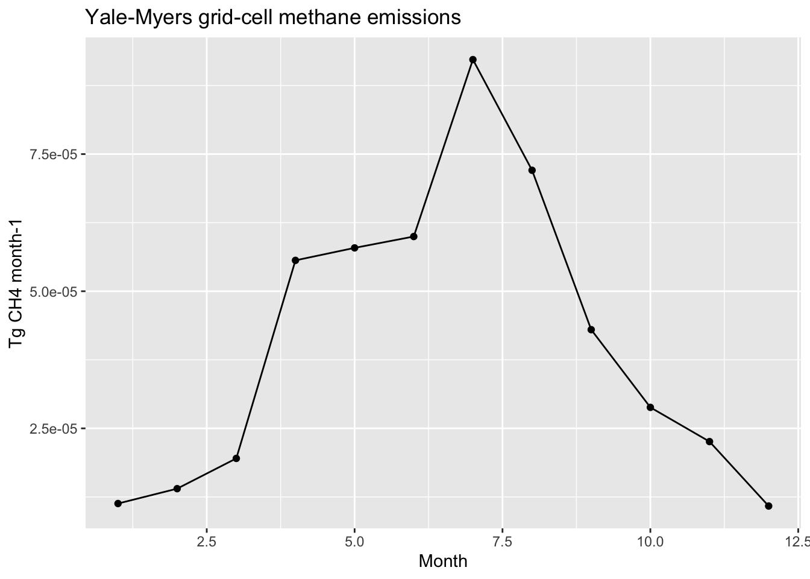
9. Why WAD2M scaling matters
Compare the WAD2M-scaled budget to a naive budget that assumes every valid cell is 100% emitting wetland area:
naive_monthly_emissions_g_c <- predictions * cell_area_m2
naive_annual_tg_ch4 <- sum(naive_monthly_emissions_g_c) / 1e12 * (16 / 12)
names(naive_annual_tg_ch4) <- "naive_annual_tg_ch4"
comparison_budget <- tibble(
method = c("100% of each valid cell", "WAD2M-scaled inundated fraction"),
annual_tg_ch4 = c(
global(naive_annual_tg_ch4, "sum", na.rm = TRUE)[1, 1],
global(annual_emissions_tg_ch4, "sum", na.rm = TRUE)[1, 1]
)
) %>%
mutate(percent_of_naive = 100 * annual_tg_ch4 / first(annual_tg_ch4))
comparison_budget# A tibble: 2 × 3
method annual_tg_ch4 percent_of_naive
<chr> <dbl> <dbl>
1 100% of each valid cell 0.163 100
2 WAD2M-scaled inundated fraction 0.0128 7.86Plot the comparison:
comparison_budget %>%
ggplot(aes(x = method, y = annual_tg_ch4)) +
geom_col() +
coord_flip() +
labs(title = "Effect of inundation-fraction scaling",
x = NULL,
y = "Annual emissions (Tg CH4 year-1)")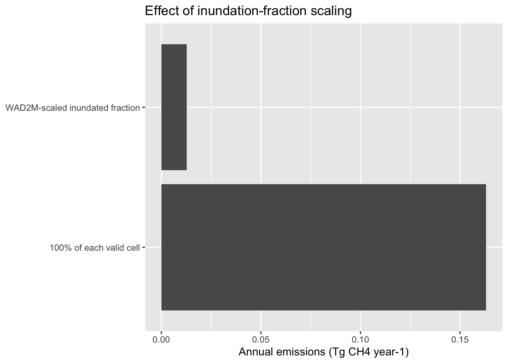
10. Inundation-area uncertainty
Wetland area is often one of the largest sources of uncertainty in methane budgets. Here we ask how much the annual Connecticut budget changes if inundation fraction is 50% lower or 50% higher than the mapped value.
inundation_uncertainty <- tibble(
scenario = c("low inundation", "mapped inundation", "high inundation"),
multiplier = c(0.5, 1, 1.5)
)
budget_uncertainty <- inundation_uncertainty %>%
mutate(annual_tg_ch4 = map_dbl(multiplier, function(multiplier_value) {
adjusted_fraction <- clamp(wad2m_fraction * multiplier_value,
lower = 0,
upper = 1,
values = TRUE)
adjusted_area <- adjusted_fraction * cell_area_m2
adjusted_emissions <- predictions * adjusted_area
adjusted_annual_tg_ch4 <- sum(adjusted_emissions) / 1e12 * (16 / 12)
global(adjusted_annual_tg_ch4, "sum", na.rm = TRUE)[1, 1]
}))
budget_uncertainty# A tibble: 3 × 3
scenario multiplier annual_tg_ch4
<chr> <dbl> <dbl>
1 low inundation 0.5 0.00641
2 mapped inundation 1 0.0128
3 high inundation 1.5 0.0192 Plot the uncertainty range:
budget_uncertainty %>%
ggplot(aes(x = scenario, y = annual_tg_ch4)) +
geom_col() +
labs(title = "Sensitivity of the methane budget to inundation area",
x = NULL,
y = "Annual emissions (Tg CH4 year-1)")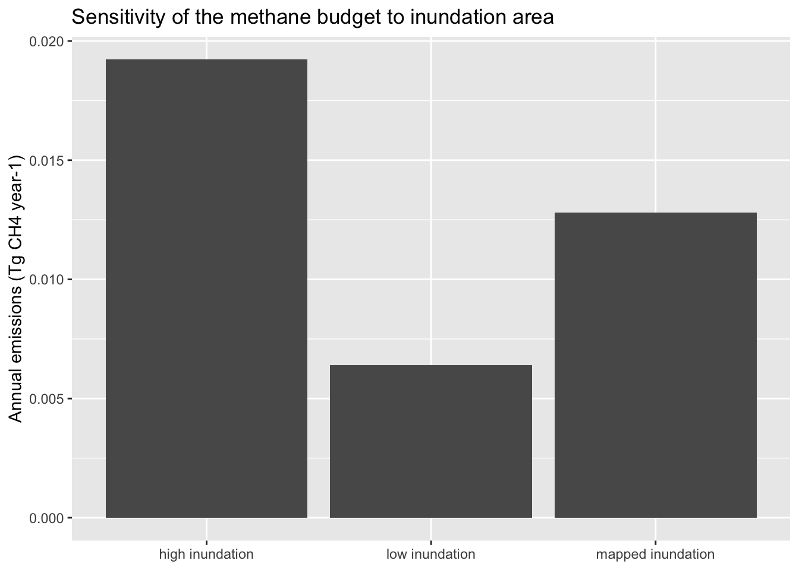
This is not a full uncertainty analysis. It isolates one uncertainty source: the area used to scale flux density into emissions. A final project could also vary the methane model, predictor rasters, or the wetland mask.
11. Save products
Save the annual emission maps if you want to use them in a final report:
writeRaster(annual_emissions_tg_c,
"data/products/ct_annual_methane_emissions_tg_c_2018.tif",
overwrite = TRUE)
writeRaster(annual_emissions_tg_ch4,
"data/products/ct_annual_methane_emissions_tg_ch4_2018.tif",
overwrite = TRUE)
Course product
This workshop produces a spatial methane visualization and emissions budget. Use the standard deliverable shape from the Final Project Roadmap, with extra emphasis on unit conversions, inundation-area scaling, and reproducibility of spatial products.
Assignment
For your final project, prepare a spatial methane visualization and budget. Include:
- Your model formula and the exact raster layer names needed for prediction.
- A table listing each spatial predictor, units, CRS, resolution, and source.
- A map of predicted methane flux density in
g C m-2 month-1. - A map or summary of the WAD2M inundation fraction used to scale the model.
- A unit-conversion table showing:
- flux density:
g C m-2 month-1; - cell area:
m2; - inundated area:
m2 x fraction; - monthly emissions:
g C month-1; - annual emissions:
Tg C year-1; - annual emissions:
Tg CH4 year-1.
- flux density:
- A comparison between a naive 100% area budget and a WAD2M-scaled budget.
- A Yale-Myers or target-site extraction table.
- A simple inundation-area uncertainty analysis.
- One paragraph explaining why inundation fraction changes the interpretation of a spatial methane flux map.